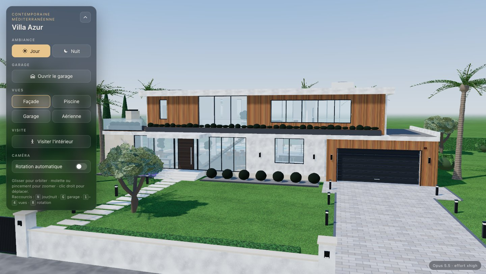
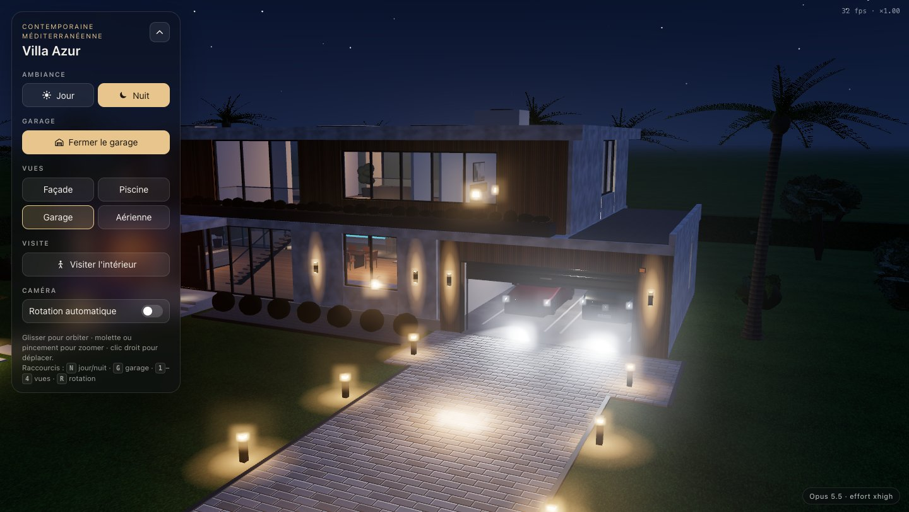

Meilleure note Survol : nuitOpus 5.5
92 / 100Villa Azur, contemporaine méditerranéenne
- Durée
- 70 min
- Tokens
- 386 k
- Code
- 3 459 lignes
- Erreurs console
- 0
- Architecture la plus crédible : socle travertin, bardage cèdre, appliques
- Garage de nuit spectaculaire, phares sur l'allée
- Visite : boutons Rez-de-chaussée / Étage, nom de la pièce affiché
- A perdu 22 min et a eu besoin d'un conseil pour découper son code
- Textes d'interface trop petits par endroits